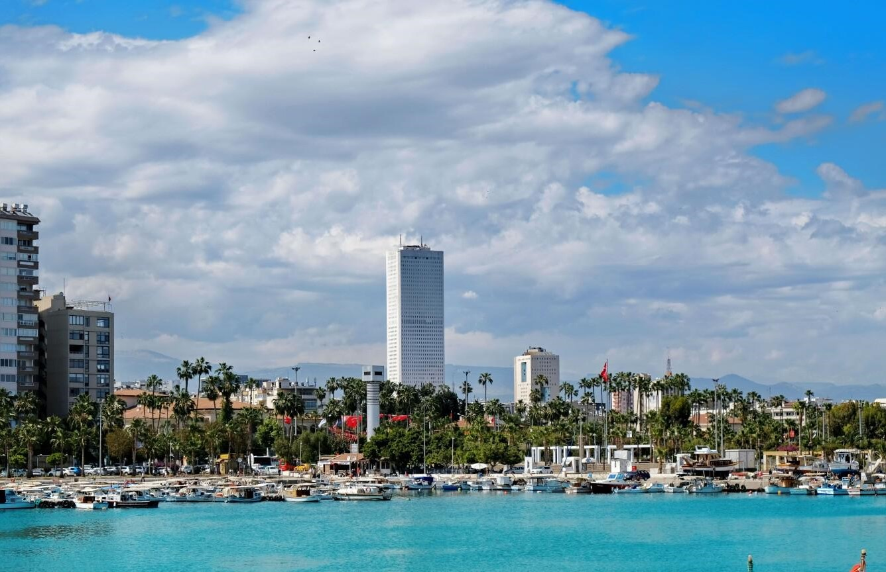

Безмедикаментозное восстановление здоровья в Мерсине
Подарите себе здоровье, сочетая отдых на Средиземноморском побережье Турции
с силой термальных источников Мерсина.
Уникальный климат, более 300 солнечных дней в году, чистый морской воздух и земля с библейской историей создают гармоничные
условия для естественного оздоровления.
По классификации Э. Осанна анатолийские источники относятся к натриво‑хлорным и имеют высокую минерализацию (6250–6280 mg/L).
Идеально подходят для мягкого очищения организма и в сочетании с бальнеотерапией ускоряют восстановление.
Индивидуальная пошаговая программа подбирается с учётом природы ваших недугов и текущего состояния и направлена на
активацию внутренних сил для целостного оздоровления.
Что традиционно лечат на минеральных и термальных водах
Заболевания суставов и опорно‑двигательного аппарата: ревматоидные артриты, артрозы на ранних стадиях, подагра, последствия и реабелитация травм.
Нарушения обмена веществ: лишний вес, висцеральное ожирение, нарушения углеводного и жирового обмена.
Программы объединяют бальнео процедуры, физиотерапию, дыхательные практики, фито и ароматерапию.
В сочетании с вашей верой в собственные силы они раскрывают внутренний потенциал организма.
Исцеление через восстановление!
В основу программ вошли ключевые подходы к регуляции организма, разработанные
Ф. Майером,
А. Залмановым
и К. Бутейко, сформировавшие целостное понимание процессов саморегуляции.
Вашими терапевтами будут здоровый сон на чистом морском воздухе, термальные и минеральные воды, натуральные фито‑ингредиенты
трав и продуктов, а также внутренняя энергия, усиленная верой.
Постоянное сопровождение, забота и контроль состояния обеспечивают безопасность
на всех этапах процедур. Вы научитесь внимательнее относиться к своему телу, самостоятельно контролировать
своё состояние, сохранять достигнутый баланс и совершенствовать свой путь — с персональными рекомендациями
по питанию и упражнениям, которые помогут продолжить движение к полноценной жизни.
Мерсин — юг Турции на берегу Средиземного моря
Название города переводится как «мирт» — растение с нежными белыми цветами. Мерсин — миллионный город и административный
центр одноимённой провинции, выросший на земле, хранящей десятки исторических слоёв. В 2025 году открылся новый международный аэропорт.
Несмотря на стремительное развитие, Мерсин бережно сохраняет исторический облик.

Колоритная пешеходная набережная с ресторанами и кафе соседствует с римской колоннадой у разрушенного временем древнегреческого порта Соли.
На территории современного Мерсина был древнегреческий город Соли — некогда значимый центр с оживлённым морским портом. От его причала сегодня
остались лишь руины, покрытые солёным налётом времени.
Во времена римского владычества сюда пришёл великий полководец Гней Помпей — человек, чьё имя гремело от Дарданелл до пустынь Востока.
В 63 году до н. э. он покорил Иерусалим, очистил киликийское побережье от пиратов. Поселившись здесь, Помпей переименовал город в честь себя.
Так появился Помпеиополис — портовый город на перекрёстке римских дорог.
Уникальный климат и плодородные киликийские земли издавна давали изобилие фруктов, овощей, зерновых, винограда и оливок. Благодаря природному
богатству регион имел стратегическое значение и служил связующим звеном между Европой, Азией и Африкой через торговые и римские дороги,
а также морские маршруты.
Через эти земли проходили торговые пути и маршруты христианского паломничества. Верующие приходили к дому Святого Апостола Павла и к храму
Святой Фёклы, у которой издавна просили исцеления — и продолжают обращаться к ней за помощью и сегодня.
В Средние века здесь располагалось армянское царство, оно служило заслоном Византии от арабских набегов. Крестоносцы здесь останавливались
для отдыха и пополнения припасов во время своих походов. До наших дней сохранились укрепления и замки, напоминающие о стратегическом значении Киликии.
Кызкалеси — крепость на острове и крепость в Силифке, основанная Селевком Никатором I, создателем Селевкидского царства. Именно свержение
селевкидской власти царя Антиоха IV в Иерусалиме легло в основу событий, которые евреи отмечают праздником Ханука. Обе крепости впечатляют размерами и мощью.
Методы активации сил самовосстановления
Методы продолжают преемственность, заложенную Гиппократом, научно раскрытую И. Глаубером и позднее оформленную
в практиках Ф. Майера и А. Залманова, дополняя её современными научными открытиями о процессах аутофагии,
регуляции обмена веществ, работе печени, механизмах желчевыделения и мигрирующем комплексе.
В основе метода лежат научные открытия и системные идеи:
Гиппократ — понимание первопричин заболеваний, роль питания и естественного очищения.
Ф. Майер — мягкое очищение кишечника и восстановление естественных регуляторных функций.
А. Залманов — системный подход к очищению организма, восстановлению пищеварения и микроциркуляции.
Л. Игнарро (Нобелевская премия) — роль оксида азота (NO) в тонусе сосудов, клеточном дыхании и энергетике.
И. Павлов — регуляция нервной системы, дыхание и восстановление.
К. Бутейко — влияние CO₂ на дыхательный центр и повышение эффективности насыщения тканей кислородом.
Эти идеи дополняются современными представлениями о:
Роли кишечника как иммунного органа — до 70% иммунных клеток, барьерная функция и влияние на воспаление.
Ферментах детоксикации печени — процессах связывания и естественного выведения ксенобиотиков.
Микроциркуляции — восстановление капиллярного кровотока и лимфодренажа.
Дыхательной регуляции — стимуляция выработки NO и оптимизацию баланса CO₂–O₂.
Все направления объединены в единую систему, которая не маскирует симптомы, а восстанавливает природные механизмы
организма и активирует процессы саморегуляции.
На основе этих принципов формируется персональная программа, учитывающая текущее состояние, образ жизни и цели.
Такой подход даёт устойчивое улучшение самочувствия и позволяет продолжать укреплять здоровье дома.
🏨 Отели и размещение
Гибкая система размещения — в зависимости от персональных предпочтений, бюджета, сезона, а также выбранных методов и практик оздоровления. Возможны варианты:
Уточнить заранее стоимость, даты, варианты проживания и подать заявку:
Перейти к заявке
Мерсин
🏘️ Апартаменты — от 600 ₺ в сутки.
Практичный выбор для проживания у моря: доступный по бюджету, с возможностью готовить из свежих фермерских продуктов, купленных на колоритных местных рынках.
Ближайшие термальные источники: BN Hotel Thermal & Wellness — примерно 40 км. Дневное посещение: от 3500 ₺
5★ Отели входят в топ 10 Турции — от 12 000 ₺ в сутки.
С термальными источниками — доступны как стандартные номера, так VIP и люксовые апартаменты и отдельные виллы с термально‑минеральными бассейнами и джакузи.
★★★★★BN Hotel Thermal & Wellness
Локация — предгорье, в 70 км от аэропорта, 30 км от центральной набережной Мерсина.
Чифтехан
Населённый пункт в горах (1000 м над уровнем моря), примерно 100 км от аэропорта и 140 км от пляжа.
✝️ Духовно‑историческое путешествие к дому Апостола Павла в Тарсе — современном Тарсусе.
Духовно‑историческое путешествие к музею на месте раскопок дома, в котором родился и вырос Святой Апостол Павел — реальный человек,
своими проповедями изменивший мир. Его слова вошли в основу Нового Завета — «Послания святого апостола Павла».
✝️ Посещение подземного храма‑пещеры Святой первомученицы Феклы.
История святой Фёклы, ученицы апостола Павла, известна из апокрифических писаний II века. Молодая девушка чудом спаслась от преследования
за веру в Господа Иисуса Христа, которую приобрела, внимая проповедям апостола Павла. Она подверглась суду и гонениям, а после побега из Иконии
укрылась в пещере в Силифке.
🏛️ Руины древнегреческого города Элайусса Себасте.
Элайусса возникла во II веке до н. э. Само название (Ελαιούσα) происходит от греческого слова elaion — «масло», что связано с обилием
оливковых деревьев в регионе и производством масла. Естественная бухта, защищавшая от восточных ветров и штормов, делала его удобным портом
для торговли и морских связей. Первоначально он был основан Империей Селевкидов, а затем процветал под властью Римской империи.


 Перейти к заявке
Перейти к заявке